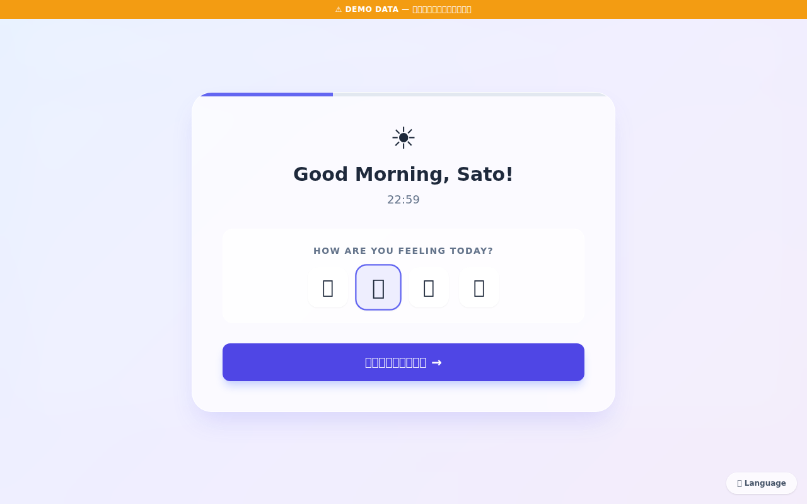
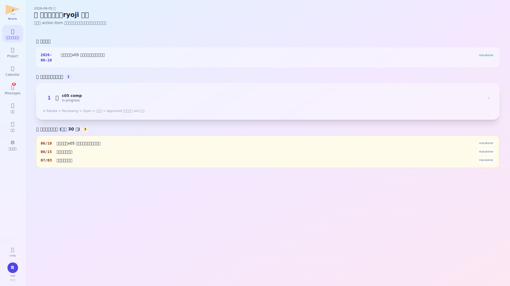
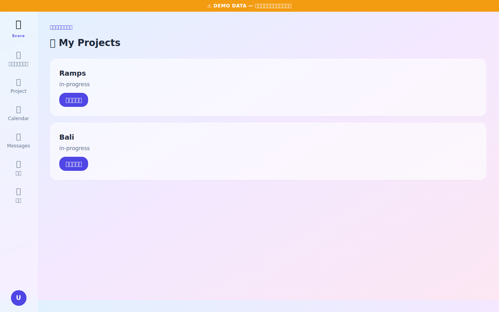
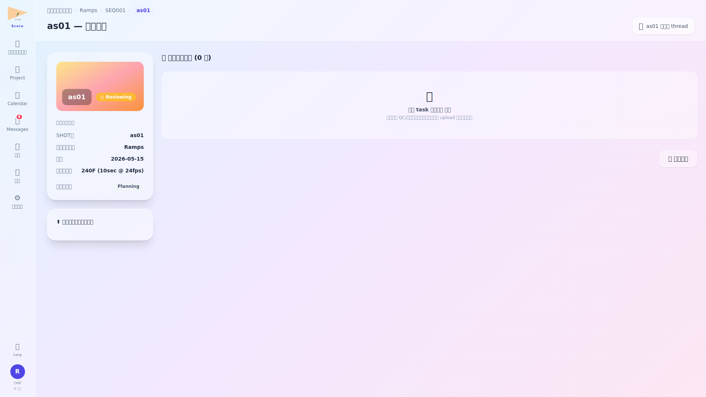
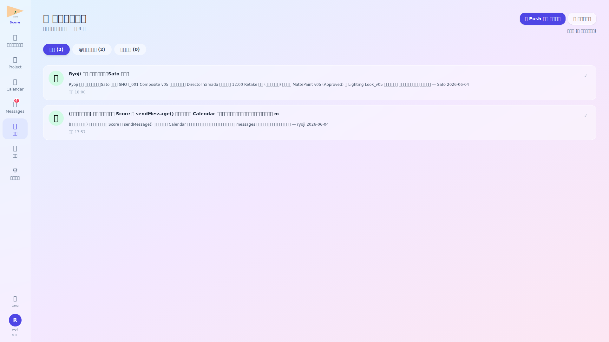
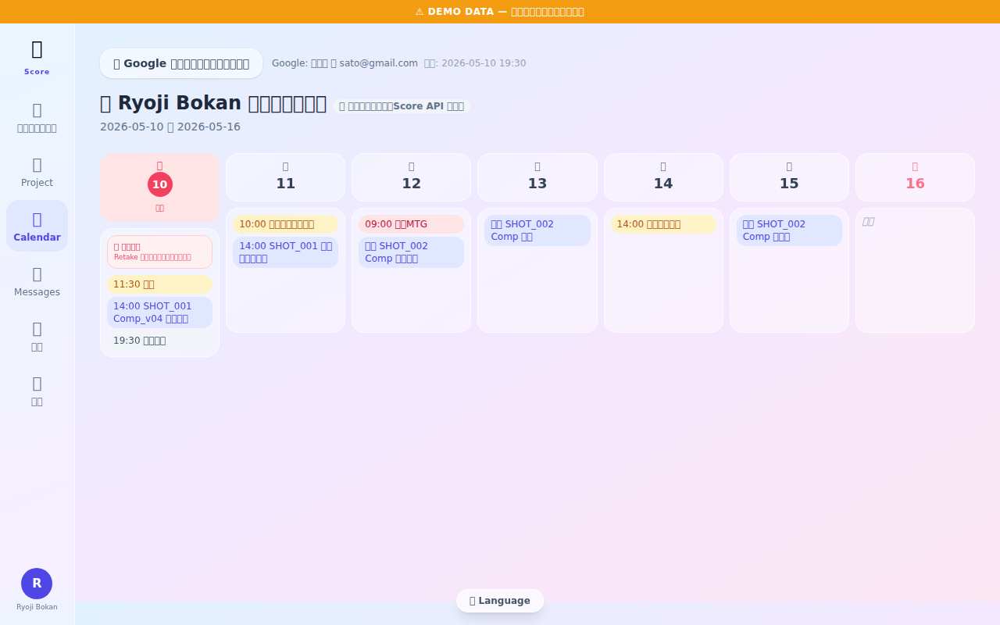
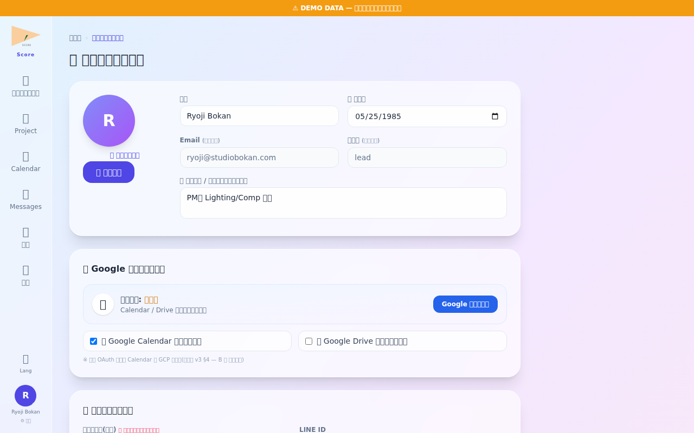
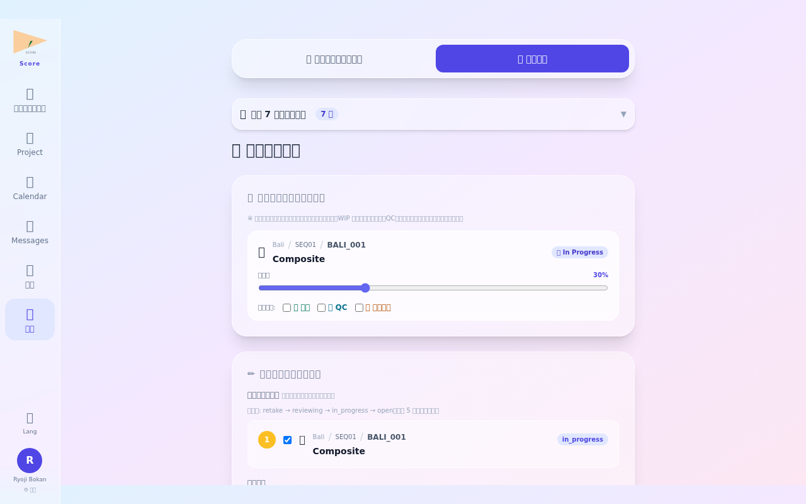
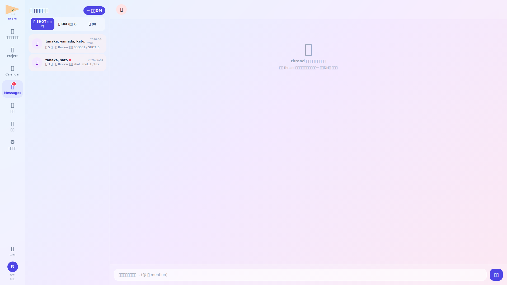
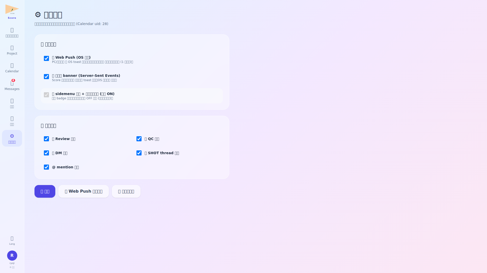

ログイン・朝のルーティン確認

Score にログイン後、まずルーティン画面でスタジオ全体に関わる定例タスクを確認します。Lead は複数プロジェクトを横断して管理するため、毎朝ここで優先対応事項を整理することが重要です。
- 全プロジェクトにまたがる定例タスクが時系列で表示される
- 期限超過アイテムは赤色バッジで強調表示
ダッシュボード横断確認

ダッシュボードでは本日の予定 (Calendar 連動・自分が参加者として含まれる予定のみ表示)、未対応タスク、QC 依頼を一覧把握。各予定カードは プロジェクト名を最上段に大きく表示 + ミーティングリンク設定有の場合は 📹 mtg リンクへ 緑ボタンで一発参加可。参加者は氏名表示 (メールアドレスではない)。
- 全プロジェクトの進捗率・QC 通過率・リテイク率がサマリー表示
- アクティビティフィードで最近の更新・問題発生を時系列確認
プロジェクト一覧確認

プロジェクト一覧では全社プロジェクトのステータス・担当 PM・納品日を一覧で確認します。Lead は各プロジェクトの状況を把握し、リソース配分やスケジュール調整の判断を行います。
- ステータス・担当 PM・納品日でソート・フィルタが可能
- 納品リスクの高いプロジェクトは警告アイコンで識別できる
ショット確認

ショット詳細画面では工程・QC ステータス・担当者・コメント履歴に加え、提出された Review/QC 依頼が 階層 title (project / SEQ / SHOT / task) で表示。本文中の ▶ QC ビューアで確認 緑ボタンを click すると Before/After QC 画面 (qc/{shot_id}) へ即遷移。提出物アセットには版数とアップロード履歴がリンク。
- バージョン履歴で過去の提出物を比較参照できる
- コメントスレッドで Director・Compositor との議論内容を追跡
通知センター確認

通知センターでは未読/既読の管理、@ メンション通知、システムからのお知らせを確認。画面右上の 📣 Push 通知を有効化 ボタンで OS レベル通知を 1 click 取得、🧪 テスト送信で動作確認可。Calendar の DM thread が 🎬 SHOT 関係者 (3+名) と 💬 1対1 DM (2名) に区分表示される。
- 通知種別（緊急・通常・情報）でフィルタリング可能
- 通知から直接対象ショット・プロジェクトへジャンプ
カレンダー確認

カレンダーで全プロジェクトのマイルストーン・納品日・試写スケジュールを俯瞰します。Lead はリソース競合や納品日の集中を早期に発見し、プロジェクト間の調整を行います。
- 複数プロジェクトのイベントを色分けで同時表示
- 週次ビューでチームメンバー全員の稼働状況を可視化
プロフィール・avatar 変更

プロフィール画面では表示名・連絡先・avatar 画像を管理します。avatar は PNG/JPG 形式でアップロードでき、スタジオ内の全通知・コメントに表示されます。Lead の顔写真を設定することでチームとのコミュニケーションが円滑になります。
- avatar は 512×512px 以上の正方形画像を推奨
- 表示名変更は即時反映（全通知・コメント履歴も更新）
退勤報告

退勤報告ではスタジオ全体の当日サマリーを記録します。品質懸念事項・翌日の重点対応プロジェクト・チームへの周知事項を記入してチームに共有します。Lead の退勤報告は翌朝の全員ダッシュボードに表示されます。
- 「全体周知」トグルをオンにするとスタジオ全員に通知が送信される
- 提出後はログアウトボタンが有効化される
💬 メッセージ — SHOT 関係者 thread + 1対1 DM

全プロジェクトを横断する Lead として、SHOT 関係者 thread で各工程の意思決定を追跡。緑ボタン「▶ QC ビューアで確認」から該当 shot の Before/After 画面に直接遷移。新規 DM は所属メンバー 29 名から選択可。
⚙️ 通知設定 — Push / SSE / 画面 badge の三重立て

Lead は全プロジェクト横断で通知が集中するため、種別 ON/OFF を活用して重要案件 (Review 依頼/SHOT thread) のみ Push 受信、その他は SSE/badge 表示に絞り込み可能。